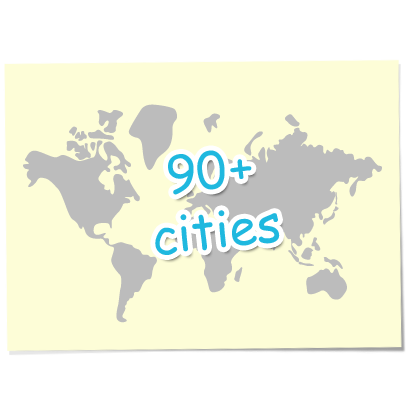

這是一個集合全球每個城市的程式設計師與市民的活動。程式設計師集合在一起，使用開放與公開的資料為基礎，編寫出應用程式，創造可視化的資料並發佈分析結果。目的是為了支持和鼓勵在世界每個地方、每個區域，和每個國家政府， 支持開放資料 (Open Data)。目前全世界有超過90個城市響應！

我們需要你！
如果你有一個使用開放資料的想法，或是那你一定要有趣的項目作出貢獻，了解如何視覺化各種資料和分析數據，或只是想看看發生了什麼事的話，那你一定要來參加！不管你的技能或興趣如何，我們鼓勵各類型的組織者，醞釀機會，促成你學習和幫助全球開放資料社群的成長做出貢獻。
我們迫切需要你的協助，比方說：
程式開發者
：我們需要程式高手來把資料設計的更為有用。這可能是資料的視覺化、更新和整合等，越瘋狂，越棒，越好設計/使用者經驗
： 我們需要像你一樣可以把事情變得很棒、很友善，並且強調體貼的使用者經驗。如果全世界最好的應用是沒有人可以用的... 那就是沒用！妳知道怎麼辦到這件事。圖書資訊與管理業者
：聽說妳們會把看書和整理資料當成早餐吃。妳們這群美麗的工作者一定知道怎麼從世界中發掘更美好的資料，並且幫助其他人找出重要且有用的資訊。統計工作者/學家
：是的！不要懷疑！當我們想找到資料、整理資料、計算資料，或是讓資料看起來更美味，我們需要你們強大的統計觀念和技巧，讓資料可以被視覺化。加入吧。資料科學家
市民
：要不是因為有偉大的市民，我們才不幹這件事，我們需要點子，渴望真實的需求，可以協助我們廣為的宣傳的朋友和啦啦隊。非政府組織工作者
政府組織工作者